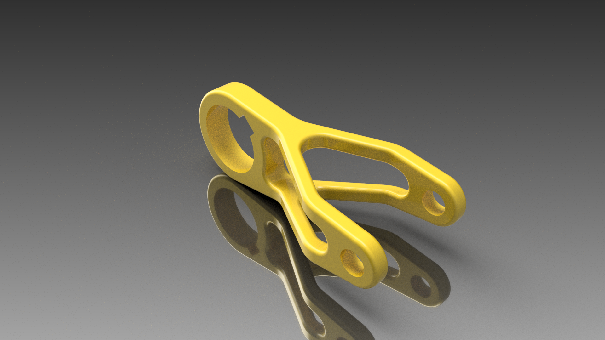

- 
Training parts
These are a few examples of some part I have created on a CAD software to improve myself into part modelisation on computer. I just started 3D softwares and I needed to be more familiar with the environment and the layout of it. So I picked some blueprint on internet and created them on the software. By the way, I rendered them to keep a print of it and see my evolution.